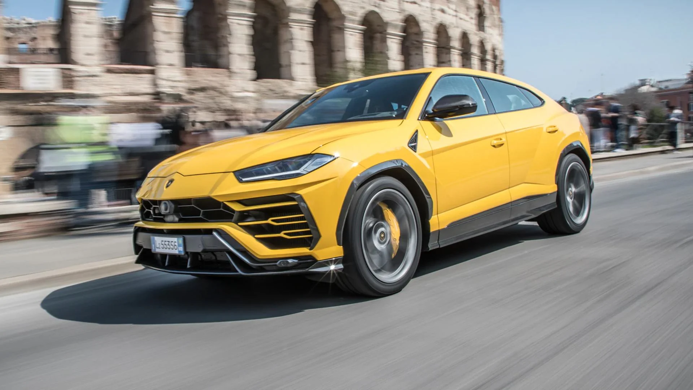
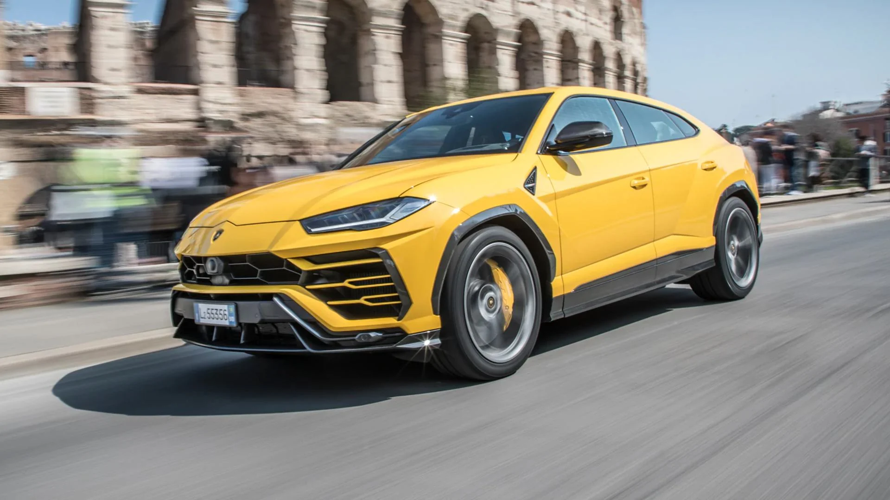

Istoria Lamborghini
Începuturile-Ferruccio Lamborghini
Fondator:Ferruccio Lamborghini (1916-1993), un om de afaceri italian.
După Al Doilea Război Mondial, Ferruccio a fondat o companie de tractoare – Lamborghini Trattori – care a
avut mare succes.Pasionat de mașini sport, el deținea mai multe Ferrari, dar era nemulțumit de calitatea și confortul acestora.
Nașterea Lamborghini Automobili (1963)
Data fondării:1963
Locatie:Sant’Agata Bolognese, Italia
Primul model:Lamborghini 350 GT (1964) – un mare succes, cu design elegant și motor V12.
Anii ’60–’70: Succesul și mitul
Lamborghini Miura (1966):
Considerată prima supermașină din lume.Avea motor central V12 și un design revoluționar.A transformat Lamborghini într-un nume legendar.
Alte modele notabile:Espada (1968) – grand tourer cu patru locuri.Countach (1974) – celebră pentru designul radical și ușile în formă de foarfecă.
Viitorul: electrificare și inovație
Lamborghini a început trecerea spre electrificare.Plănuiește ca până în 2030, toate modelele să fie hibride sau electrice.Continuă să combine luxul, performanța extremă și designul spectaculos.
De ce taurul?
Sigla Lamborghini este un taur, deoarece Ferruccio era născut sub zodia Taur și era pasionat de coride.Majoritatea modelelor poartă nume de tauri celebri din luptele spaniole (Miura, Diablo, Murciélago etc.).
 
